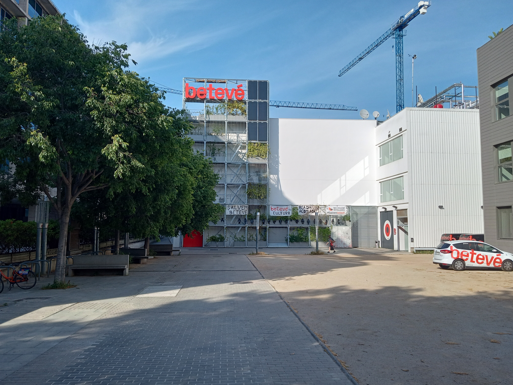
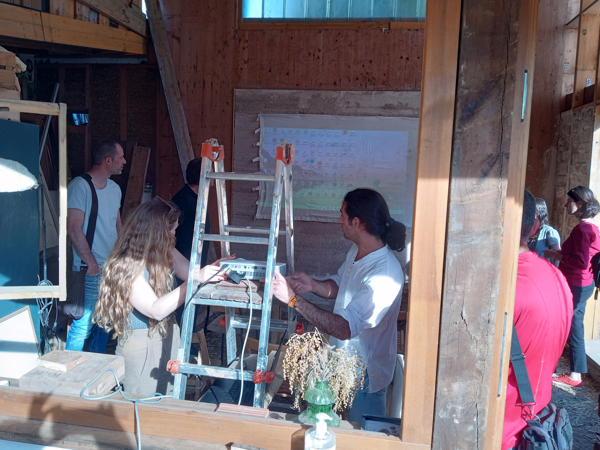
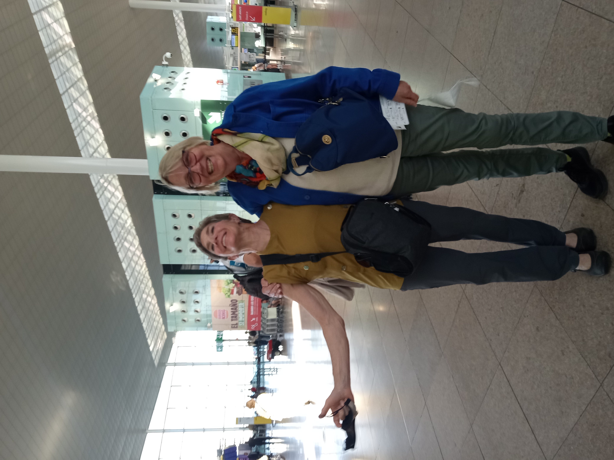
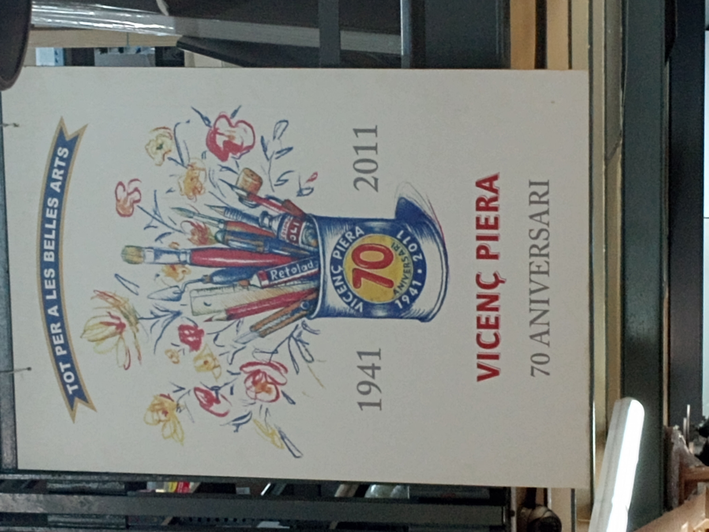
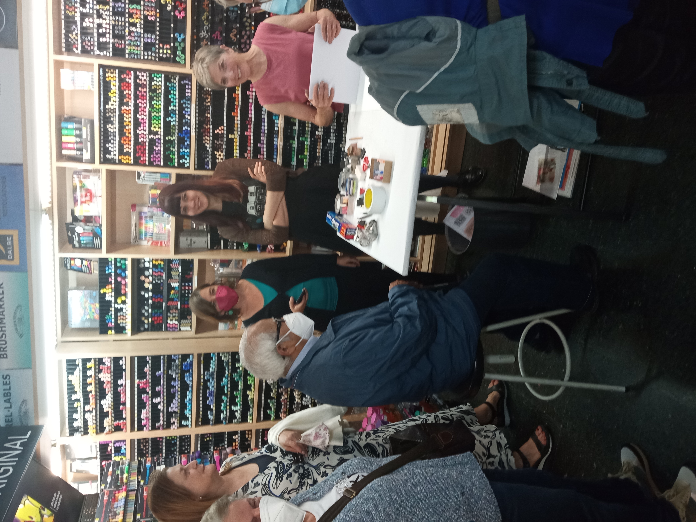
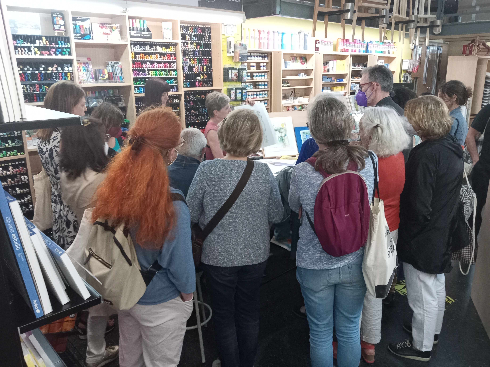
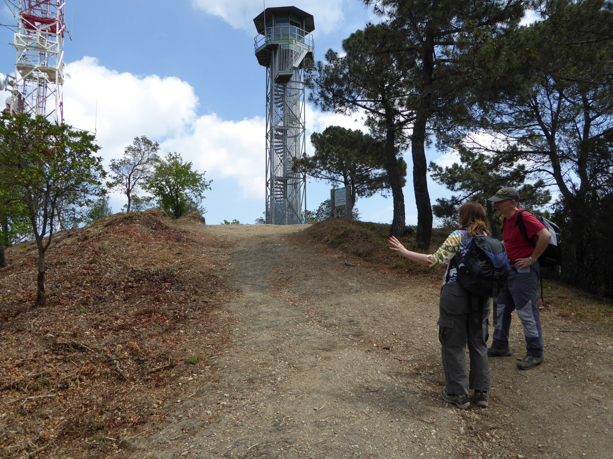
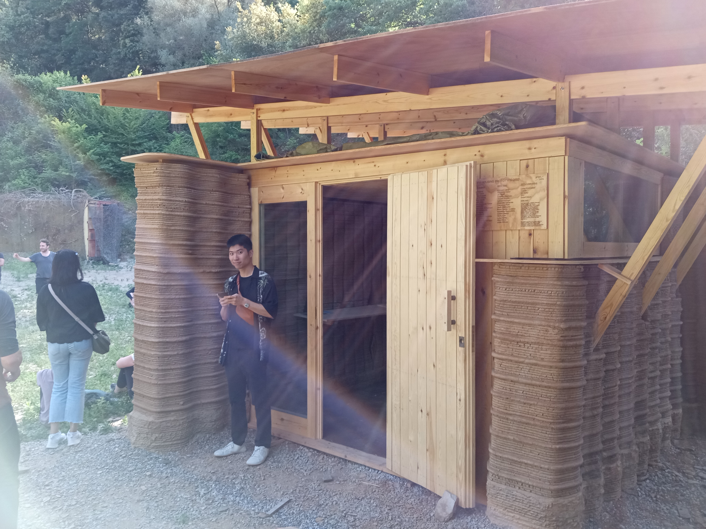
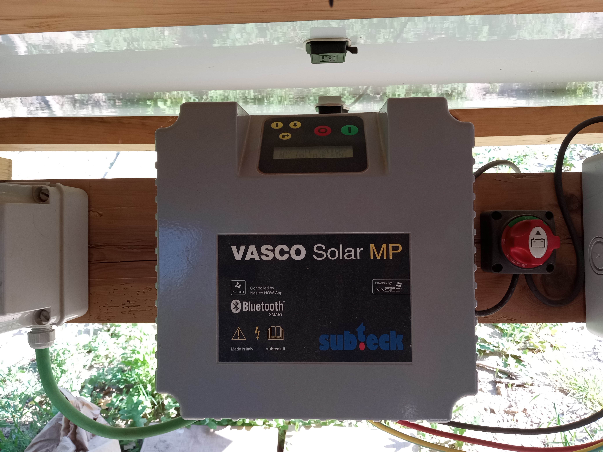
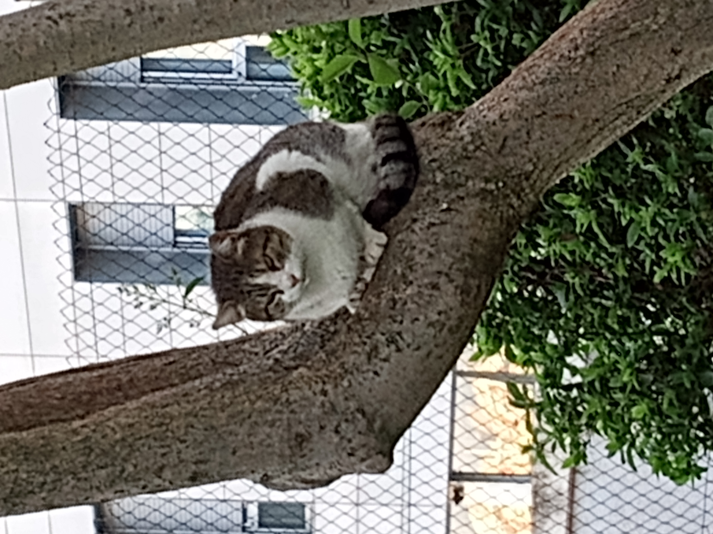

Week 8: 9/5/2022 - 15/5/2022¶
For most of this week Bente is here so between enjoying her company, fitting in some events from the Model Architecture festival, and prepping Dawn for her first demo on Thursday it will be a busy week.
9/5/2022 Monday¶
Bruce’s classes as usual. Lots of folks overslept on Monday. Discussion of Elon Musk assertion that Spain should become provider of renewable energy for Europe. Good discussion. Spanish Bruce’s class had field trip to ‘haunted’ houses and locations along and near La Rambla. Dawn’s class had substitute. Visited Vicenc Piera after class with Bente to set up demo for Thursday.
In the morning Dawn and Bente went back to Raima to get the rolles of silk paper that they wanted. 11 rolls that they then took back to our apartment and cut in half. After cutting them in half (so they would fit in the luggage) we rerolled them on top of each other as much as possible to reduce the volume for Bente. Bente stayed for dinner which was lovely and then Bruce escorted her down to the metro to go home.
10/5/2022 Tuesday¶
Music class discussed Eurovision contest and what to look for. Rich dropped in and talked about his experiences and sent along a set of bingo cards for the event. The bingo squares are revealing in terms of the expectations of viewers. I’ll try to link the pdf at some point for future reference.
Dawn and Bente did some shopping for clothes for the demo on Thursday. We met afterwards though I can’t quite remember how. Later in the afternoon we met up (went up) to Bente’s hotel and then walked over to Via Augusta to find the other Vicenç Piera store which was closed but does appear to be a bigger store (confirmed on Thursday by Gemma and Anna at the first demo). We walked back towards Bente’s and got a large loaf of bread because we were out. As we made our way back we decided to do a quick visit to Casa Vicens (Guadi’s home in the area). Bente suggested it as a fascinating contrast to Casa Batllo which was a Guadi project for a very wealthy client. There is a sense of a more moderate use of resources in this house which she thought was interesting. We would agree. Along with many lovely thoughtful features. As an example all the exterior doors and windows also have lattice screens which provide visual privacy while still allowing easy airflow which would have been important during hot summer days. High ceilings as well. All of the furniture is built in and there are tiny foyers between all the rooms in the corners due to the effective thickness of the walls. Ceilings are very ornate to our way of thinking and built up from rows of large square tiles mortared to the ceiling. What most captivated our attention/interest were the plaster all treatments which are a style of Italian plaster called s’graffiti apparently. We are very curious and have found some light discussions on the web but need to pursue this further since it seems very beautiful.
Because of kettlebell (a serious circuit) and the various visits to the art store and Casa Vicens Dawn was pretty tired so I headed off the check in on a couple of Model workshops The first was a vertical garden project just down from Glories that I had walked by a couple of times. This was a guided tour that I had signed up for. When I got there one person was wandering around and I thought he was another interested party and we were waiting for the guide. As it turns out he was the architect and we were waiting to see if any of the other folks who signed up were going to show. They didn’t unfortunately. He graciously took me through a quick discussion of the project and it’s goals. It is made in modules that have the internal integrity to be stacked quite high and have built in stair units and catwalks. This resolves a concern I had about the Co-mida wall which is very beautiful but not clear how you would maintain it once it gets above ladder height. Co-mida was envisioned on terrace walls as opposed to large party walls so perhaps that’s not really an issue. This project includes a water catchment system that provides some (but not all) the water for the plants. There are bat habitats and bird nest boxes in various places but it clearly needs a consistent effort on somebodies part to experiment with different plant commuities at different parts of the wall. The large exposed area is left so that the TV station in the building can use it for outdoor projection parties. Typical of Barcelona projects this is a demonstration project and the planning for how to generate a reasonably rate of adoption throughout the city is barely started. The nice thing about this project is that it is realitively easy to imagine deconstructing this wall and moving it to a new location when the party wall it is up against becomes part of some other project. As I’m writing this it occurs to me that the modules are a lot like a lightly constructed shipping container and have some of the same useful features.
Poblenou Vertical Garden

Poblenou Vertical Garden

After the quick tour of the vertical garden I walked back down to ConnectHort where all the stuff I’m interested in seems to be happening. The presentation of novel materials tonight was focused on the work of two women, Mariana Palumbo and Elisabetta Carnevale. Marianna is working with biomaterials like the fiberous material in corn stalks, an agricultural by product, to explore their humidity and thermal management potential. Lots of nice data and explorations. It’s interesting to be in a place where temperature management is less central to the discussion. Humidity management seems very odd to a person like me from a desert. Elizabetta is an Italian researcher who studied at CRAterre in France and has a deep fascination with the material. I couldn’t stay for her whole presentation but again there is a clear sense of strong technical detail and understanding that is often absent in discussions among architects. The feature of the presentation that intrigued me the most was the setting. These are professional researchers in every sense of the word doing good work in the world and yet they were presenting in a half finished shed with the projector propped up on a ladder with a slightly stained sheet stuck to the concrete wall for a screen. One could argue that it represents a casual approach to sharing information and being accessible to the public and it is. If this approach to presentation is consistent across genders and disciplines then I am delighted. What I worry about is whether this represents a less respectful approach and support for women in this field or perhaps a lack of respect for the whole field of study. I’m not sure what to think but it has started me questioning and watching. Here is an image of the presentation setting.
Novel Materials Presentation Setting 
11/5/2022 Wednesday¶
Astronomy we discussed the possible ways that meteors might destroy life on earth and how to react properly to a fireball in the sky. Then we explored the changing numbers that we use to asses whether there might be life elsewhere in our galaxy or universe. Spanish we started on another past tense just for fun. After Spanish class we met Bente at Port Vell and walked to La Gavina restaurant for dinner. This is along the water front next to all the mega yachts. The paella was very good and while prices were higher it was still not outrageous and the food was lovely. Thank you Bente!!
12/5/2022 Thursday¶
Today was a day to sort out the different ways to get to the airport for travel. Turns out the metro is basically free but takes a solid hour and a bit to get to a station that overlaps with L9 Sud which goes to the airport. We met Bente at her hotel at 8:00 and had her at the airport at 9:30 or so. We realized that we had forgotten to get an explicit picture with them both so this is what we got before Bente hit the security line - safe trip home Bente!!
Friends!

After we finally got home around 11:00 Dawn spent the rest of the day prepping for her demo at Vicenç Piera. At 4:00 ish we headed up that way and got her started setting up in the pretty cramped space. Anna is the rep for Pan Pastels and Gemma is an assistant with pretty good English skills. Those who came were very interested and engaged. All the various confusions got worked through and I think it was a success. I have a couple of short videos from the event uploaded to my google drive but I haven’t kicked them over to Youtube so I can share them yet. I’ll get to it. In the meantime here are some photos from the event.
Vicenç Peira Logo

Vicenç Peira Demo 1

Vicenç Peira Demo 2

After we cleaned up we went home and collapsed. Good work Dawn!!
13/5/2022 Friday¶
Kettlebell in morning for Dawn. Bruce forgot his phone. After getting some of our favorite bread from the Origo bakery I headed down to meet Dawn on her way back from kettlebell training. Sounds like a good workout with good technique insights. On the way home we stopped off at a cafe on Meridiana just opposite the Mercat de Clot and got some sandwiches for our excursion to Valldaura Labs later in the day as well as some coffee.
After a little catching up on tasks we headed off to the Laberint de Horta to see if we could follow the very loose directions to hike up the shoulder of Tibidabo to get to Valldaura Labs. We opted to try to slightly shorted and rockier path to the right of the Laberint. In hindsight not the best choice perhaps. The trail was pretty rubble covered and sometimes we felt like we were walking down a tunnel. Eventually we connected with one of the roads (mostly for mountain bikers) near the top which made walking easier. When this road joined what I think is the main loop road that runs around Tibidabo it seemed like the right direction go was to continue up to cross the ridge to the other side where the labs are. This was the mistake. The road we took eventually took us to the Turo de Valldaura. This appears to be a fire lookout which makes a lot of sense for a heavily forested mountain in the middle of a large city.
Turo de Valldaura

No real trail labels and not a lot of confidence led me to head along the ridge from the Turo in the wrong direction. Eventually the google maps location made it clear I had gone in the wrong direction (only a few hundred meters) so we went back to the Turo and took a path down on the other side. This was a path that we had seen two men almost running up with hiking poles. Looking down the rocky rutted path it seemed a little crazy what they had been doing. We headed down into the tunnel and shortly came to a rugged looking fork. We opted for the less eroded path which still seemed headed in the right direction. In 100 m we came upon some other hikers resting and I described where were trying to get. As we conversed I looked down the slope and could actually see the main lab building so that helped. The other hiker confidently said we needed to go back to the path we had skipped and follow it. We thanked him and heading back. Below is an image from that path that we went down. This is very typical of the paths we had been hiking for the last hour.
Typical trail on way to Valldaura Labs

After gingerly picking our way down the trail for 10 min we met the ‘road’ again and two other folks who were on their way to the tour. Both architecture students with one from Columbia and the other from Egypt. Collectively we compared our google map locations and found the driveway for the labs which was still almost 10 min down the driveway. When we got there Alek greeted us and noted that 50 had signed up for the 3D Printed House tour but it appeared that many were either late or lost as we had been. They opted to wait for a while and eventually about 30 folks arrived mostly in two large groups of students. One group from an architecture program and the other from an interior design program. Just a few of the more random interested parties that I would have expected. As it turns out we got a general tour of several projects at the labs along with the 3D house so there is no need to go back for the open house on Saturday.
Valldaura Labs: As you would expect for an architecture program the website is pretty attractive and covers a lot of the bases. It appears to be a residential program offering what they call a Masters in Advanced Ecological Building. Tuition is about 20k€ annually and it’s not clear whether that covers the room and board at the facility for the 20 or so students. It is a lovely old space from the 19th century when the entire mountain was essentially clearcut to put in vineyards. This is about the same time that New England as clear cut to meet needs in the US. At the time it was an old growth oak forest that may have been a bit like the old growth forest we saw in Galicia near Lugo. Tibidabo is now covered with a fairly young pine forest which provides the materials and learning opportunities for the students in this program. The facility is 140 hectares (I think that’s what I heard) which provides the raw materials for all student projects. Helping maintain the garden at the facility is another expectation of the program along with learning how to harvest, process, and prepare the materials for all projects. This allows the program to really assess the amount of material and waste generated by various construction technologies. They have recently acquired a portable saw mill along with industrial scale table saws, planars, band saw, and CNC wood routers. They also have access in the lovely design studio to the full range of fab lab equipment from large laser cutters to vinyl cutters. One focus of the research at IAAC is mass timber design (there is high rise building project in Portland based on these same ideas which unfortunately seems to have been stalled by economics). The students at the Valldaura Labs laminate their raw material in a large press (using regular wood glue for now) to understand this material. CNC tools provide a way to rapidly move from a CAD design tool to fabrication without having to learn traditional fabrication skills with wood. An interesting model in my mind. The common language of the program is English.
Valldaura Labs: Buildings

We wandered around a little before the tour which started with an explanation of the process for the students which ends with an actual build project for 4 months. The most recent one is a greenhouse like structure for growing seedlings for the garden and some hydroponic beds for salad greens. The bedding material was wood shavings (pine) which I’m a little surprised works well due to the acidity of the pine. I’ll need to explore that later. The greenhouse is actually very open to the atmosphere with wide gaps at the bottom and top of the glass walls. Some of the glass roof panels are solar panels in an effort to approach net zero. The is a sense that they are trying to build an open database for all their projects. I’ll have to write them and see if it’s accessible by the public.
After the greenhouse project we were taken to the design/fab lab and then on to the gigantic wood shop. They are very serious about students learning to fabricate their designs. One challenge they talked about was the 2 year drying time for the wood with a 1 year masters program. The mismatch means they are working usually with pretty green wood. Each tree is harvested and measured to learn about the usable volume in the tree and challenge the designs to use the ‘waste’ products in some way. Very interesting to see. If the data is fairly public they could easily collaborate with other institutions and programs to replicate individual project or offer alternative strategies.
Everyone in the program works in the garden to understand how food grows. A bit like the D lab exercises that I’ve heard about with - reminds me that I need to make the D Lab blog a regular part of my weekly reading:) Possibly I’ll get nothing done! Everyone is also very clear about walking everywhere to get to town or to a project site. Because the site is an large old vineyard there are established roads and trails everywhere as well as buildings in various states of disrepair. The picture above was taken as we walked down the road/trail to the 3D printing site.
Valldaura Labs: Walking down…

The site is actually an old clay pit from which they manufactured many of the bricks used in the nearby walls. This answers one of the questions I had which was about the clay content of the soil that they used (Eduard noted that it was about 20%). Sisal fibers cut to 4 cm were used to provide some added strength to the mix. Here’s the first impression you get.
Valldaura Labs: 3D Printed ‘House’

There are a whole lot of interesting details. One is that every 10 cm or so there is a slightly wider layer that hangs out. This is a feature that was copied from earth buildings in Africa or the middle east to help push water off the walls at regular intervals to minimize erosion. The experiments with the diamond shaped windows weere to explore possible shapes that could be printed without the overhang collapsing. The corrugation contributes to the strength of the wall but most importantly it allows the wall to shrink without introducing regular stress cracks. Eduard noted that to determine shrinkage they printed a straight line of the clay material and then measured the regular distance between shrinkage cracks (very regular apparently). By corrugating the wall the shrinkage can be absorbed by small changes in the radius of the curve and not tensile failure of the material. In addition straight lines are hard to ‘draw’ with the circular motor drive of the crane printing mechanism.
Alek noted that the printer head moves like and owl’s head meaning slightly more than 180 degrees in each direction so that it can make a complete circuit without snarling the feed hose. The basic set up of the printer is a tripod of crane towers with one at center of construction and two on the ‘outside’. The material from the local dig was screened in a tumble screener to remove material larger than a few cm. The printer is provided by WASP which is an Italian company with a fascinating manifesto. Good website to explore when time permits.
There was a nice focus on the idea that all of what happens at Valldaura Labs is research. These are novel design ideas and you expect things to go wrong as you learn how the proposed system works. In this particular case one of their walls collapsed in the early stages of printing due to printing too much material and the weight of the water crushing the still plastic lower wall. Luckily the material could just be scooped up and reused albeit more slowly. The drying time for a plastic material like clay is an important area of investigation. This design had significant internal structure (honeycombs) that allowed them to move air continuously through the interior of the wall in an attempt to dry it more quickly. It is interesting to note that the house was printed over 6 weeks in the winter and finished at the end of February. The interior of the wall and even in the interior of the house the walls are damp to the touch 4 months later. This long drying time is a consideration.
In their commitment to trying to create an earth building without using any concrete the question of how to construct foundations is it’s own issue. Foundations must be incredibly strong and stable to avoid settling and other challenges. Concrete is perfect for this task. In this case they experimented with cassions of wire cages filled with tons of rock embedded in the ground. A roughly 30 cm layer is cast on top of that using a slightly different mixture (not sure it contained fly ash as a cement like binder). To keep the surface texture similar to the rest of the house they used the 3D printed clay to create the forms for the poured foundation material. It makes for a good visual match even though the texture is inverted from the layers above. A close look at the image will illustrate this. Below are two views of the house from the other side from the exterior and the interior.
Valldaura Labs: 3D Printed ‘House’ Entry 
Valldaura Labs: 3D Printed ‘House’

It also appears that the team set up a 4 panel PV system to provide basic power for the project since there was no other source of power this far from the main buildings. I forgot to take a picture of the 4 panels but the controller is possibly of interest and I was intrigued by the monitor mounted up top though I’m not sure what it’s monitoring. There was a squeege on a long handle lying underneath so I suspect they had to clean the panels regularly due to the dust generated in preparing the clay soil for printing.
Valldaura Labs: Controller for Solar Power 
Valldaura Labs: Unknown Monitor (SmartCities perhaps?)

A couple of chairs were adjacent to the project that seem to represent work of some of the students with the CNC mill. Here they are….
Valldaura Labs: Chair form

After about 2 hours the whole tour wrapped up and we all slowly trickled away. This time we walked back along the correct road and it was much easier going. Would definitely have been hard to return along the rocky path we came up on even without getting off trail. Here’s what it looked like.
Valldaura Labs: Better Trail

As we got back to the Mendat station we saw this cat in a tree that seemed to need to have it’s picture taken. Done. Cat photo!
Valldaura Labs: Tree Cat 
We finally got back to the house a little late for Dawn to go to Life Drawing tonight. Sorry about that.
14/5/2022 Saturday¶
Saturday turned out to be a rest day after lots of cramps through the night from lots of walking on Friday. Worked on updating the journal, paying various Medicare bills and trying to start figuring out what we’re going to do for Medicare Supplement plans. Really overwhelming the choices for supplement plans. Also needed to get tickets back from Andorra earlier than Tegan and Tyler. Turns out a bus is the best option so that’s what we’re doing. 3 hrs roughly and perhaps we’ll meet Brian and Brenda for dinner.
Saturday night was also the Eurovision Finals so of course we had to watch. Some good and some not so good. It’s a unique sort of event and doesn’t make a lot of sense to us but now we can say we’ve seen a whole competition. Glad to hear that Ukraine won and Britain did well. Ukraine’s entry was actually fun and interesting. Hit all the right marks as well as being the people’s choice because of the war. I also like Iceland’s entry which was subdued but had lovely harmonies and was true to their culture.
15/5/2022 Sunday¶
Today we decided to go visit some art exhibits/museums. Dawn’s family once had a print(?) by Morandi. The gallery at La Pedrera (Casa Mila - another Gaudi project) had the show so we got tickets and headed over after a gentle start to the day. It was a lovely show and quite interesting. No pictures allowed at this one but one can look online to see lots of his work. Along the way we could look out at various features of La Pedrera so we pretty much got part of a tour for free. Still want to see the crypt at Colonia Guell but that will be the last Gaudi we worry about.
After the Morandi exhibit we stopped to have coffee and entrepans for lunch at a bakery just around the corner from the Expanish school very tasty and only a tiny bit more expensive that our norm. Afterwards we headed out to Passeig de Gracia to walk down to the Fundació Tapies which is just around the corner from Casa Batllo. Along the way we pass a street that was totally closed because there was a team working to set up a large building crane in the street. Never having been so close to this process (and probably couldn’t in the states) we hung around for a bit. Things were moving slowly so we decided to stop in after our visit to the Fundacio Tapies and see if anything had changed. What was impressive was that the main crane column was almost half the lenght of the block and the truck that seemed to be setting it up was basically the full width of the street. One of the workman said that it was being set up to work behind one of the buildings along the street. Here are a couple of images.
Setting up the crane

Setting up the crane

We did the Fundacio Tapies which had a nice film (on the top floor) that helped us understand a little bit how he thought about his work. Definitely helped me see a little more in the work which is quite abstract. The show on the lower floor was from the early 90’s when he was characterized as being melancholy and thinking about death. Some of the pieces seemed quite powerful to me. The library which is on the same floor is a stunning collection of art books from around the world. If you’re an art historian or just interested it might be very interesting to make an appointment (required) and look through both the beautiful space and the collection of books. The traveling exhibit was beyond my ability to comprehend though it was interesting that this Polish artist living in London also contributed a set of drawings that were very approachable and skilled to this show. The conceptual relationships between the rest of the pieces in the show was lost on me.
We walked back around the block and up the Rambla de Catalunya which runs parallel to Passeig de Gracia to see how things were getting on with the crane setup. This time when we got there they were lowering the main structure down to the street which seemed surprising. They also broke a large branch off a tree in the process. We sat and had a soft drink to see if something else would happen. While we were watching we chatted with a gentleman who was watching out of curiousity as we were. There were actually a number of people who stopped to watch but mostly they moved on when things didn’t happen quickly. The guy I talked to had been hanging around for a while and we chatted about which end of the the structure was going up and how that would happen. The workman inspected something and then picked it up again to the same position shown in the images. Once again everything stopped at this point and there was a lot of discussion amoung the workers and pointing at dials on the lift crane. The guy next to us was muttering about Spanish workers and getting things done. They have the same perception that it takes 3-4 for supervisors for every one person actually doing work as well as the challenge of decisions by committee. He got a good laugh out of the common experience between our countries. We will probably check tomorrow on the way to Spanish class to see if the crane is still there. It’s blocking many businesses as well as car parks that I would think would be a problem if they were going to be there for any length of time. I’ll be very curious to see. Dawn noted that just getting the several huge trucks and flatbeds into this relatively narrow street would have been fascinating to see.
Walked home and rested for a bit before Dawn headed off to life drawing. I’m sure this is one thing that Dawn will actually miss about Barcelona.
Checking my photos there are a couple of books that we saw in the gift shop that we may need to track down. Pallets 3.0 was one. Contemporary Wood Buildings was another. Achitectura con Madera may only be available in Spanish but that would be OK. Stone by William Hall also looks very interesting.
Tonight I need to be in bed early due to the total lunar eclipse at 5:30 am tomorrow morning. We’re meeting at the Olympic Plaze on Montjuic which has a good view of the setting moon to view this event. We’ll see who makes it:)